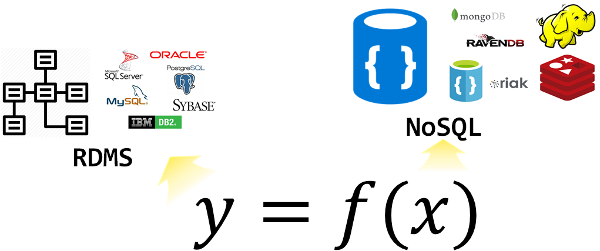

시빌워에서 아름다운 동행
만나면 좋은 친구 R과 파이썬
.center[  ]
]
.footnote[ 데이터를 만지는 모든 이를 위한 세미나 및 네트워킹]
class: inverse, middle, center
데이터 과학자 1세대
class: inverse, middle, center
빅데이터 → 데이터 사이언스
구글 Trends 데이터 사이언스 한미 비교 - 한국

데이터 사이언스 업무 - 에어비앤비

- 분석(Analytics) 데이터 과학자(Data Analyst)는 좋은 질문을 던질 수 있고, 탐색적 데이터 분석을 통해서 문제와 해법을 명확히 하는 재주가 있고, 대쉬보드와 시각화를 통해 데이터 분석을 자동화하고, 추천 결과물을 통해 비즈니스를 변화시킨다.
- 알고리즘(algorithm) 데이터 과학자(AI/Machine Learning Engineer)는 기계학습에 특기가 있는 사람에 적합하고 제품/서비스, 프로세스에 데이터를 알고리즘을 통해 녹여내서 비즈니스 가치를 창출한다.
- 추론(inference) 데이터 과학자(Statistician)는 통계를 사용해서 의사결정을 향상시키고, 업무의 영향도를 측정하는데 주로 통계학, 경제학, 사화과학 전공지식을 적극 활용한다.
.footnote[ Elena Grewal(July 25, 2018), “One Data Science Job Doesn’t Fit All”]
class: middle, center

class: middle, center

class: inverse, middle, center
데이터 사이언스 언어
프로그래밍 언어
데이터 사이언스를 대표하는 R이나 파이썬 모두 컴퓨터 프로그래밍 언어라서 태생적으로 거의 모든 컴퓨터 프로그래밍 언어가 갖고 있는 두 언어 문제에서 역시 자유로울 수는 없다.
| 시스템 언어 | Ousterhout 이분법 | 스크립트 언어 |
|---|---|---|
| 정적 | – | 동적 |
| 컴파일 | – | 인터프리터 |
| 사용자정의 자료형 | – | 표준 자료형 |
| 빠른 속도 | – | 늦은 속도 |
| 어려움 | – | 쉬움 |
.footnote[ Ousterhout dichotomy]
Premature optimization is the root of all evil
R을 예로 들면, 팩키지 개발을 할 때 R 스크립트로 모든 기능을 선행하여 기능을 구현하고 유용성이 인정되어 사용자가 많아지면, Rcpp 팩키지를 사용하여 C/C++로 후행하여 속도와 성능이 필요한 부분에 재개발하는 경우가 흔하다.
.center[  ]
]
데이터 사이언스 프로세스

데이터 탐험(Data Adventure)
2019년 1월 28일, 마이크로소프트웨어 395호 데이터 탐험(Data Adventure)편
.left-column[  ]
]
.right-column[ - SCHEMA - S1. 데이터 사이언스, 타이디버스로 향하다 - 이광춘 - S2. 데이터 분석가는 어떤 스킬셋을 가져야 하는가 - 서희 - OPINIONS, - FUTURE - TECHNOLOGY - WORKS - APPLIED - RESEARCH - ETC]
.footnote[ MICRO SOFTWARE 홈페이지, 마이크로소프트웨어 395호 데이터 탐험(Data Adventure)]
데이터 사이언스와 API 프로그래밍
- 들어가며: 코드 몇줄로 엄청난 생산성!!!
- 웹크롤링과 API 비교
- 유료와 무료
- AI 인공지능
.footnote[ - 안상선 M로보 대표 “MVP는 경운기 만드는 과정” - 이광춘 (2019-04-04), “’뉴스 데이터’라고 읽고 ’텍스트 데이터’로 분석하여 사례 만들기”, 한국언론진흥재단, “2019 뉴스빅데이터 해커톤 개최”]
금융 적용 - 인지기술(cognitive technology)
.center[  ]
]
- 각종 계약서
- 리보(LIBOR, London Interbank Offered Rate, 런던 은행간 금리)가 명기된 계약서
- 우편/민원/이력서 분류
class: middle
R powered by AI
author_carpentry_kr/tutorial/reproducible_finance/shiny/author_carpentry_kr/tutorial/reproducible_finance/shiny/global.R
author_carpentry_kr/tutorial/reproducible_finance/shiny/server.Rauthor_carpentry_kr/tutorial/reproducible_finance/shiny/ui.Rauthor_carpentry_kr/tutorial/reproducible_finance/shiny/www/*.jpg
background-image: url(“fig/Avengers_Endgame_poster.jpg”) background-position: 50% 50% class: center, bottom, inverse